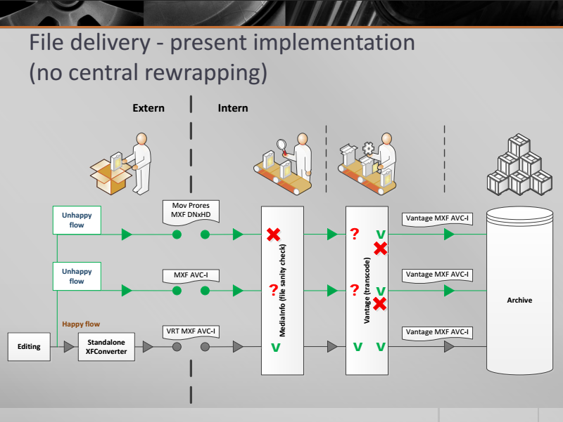
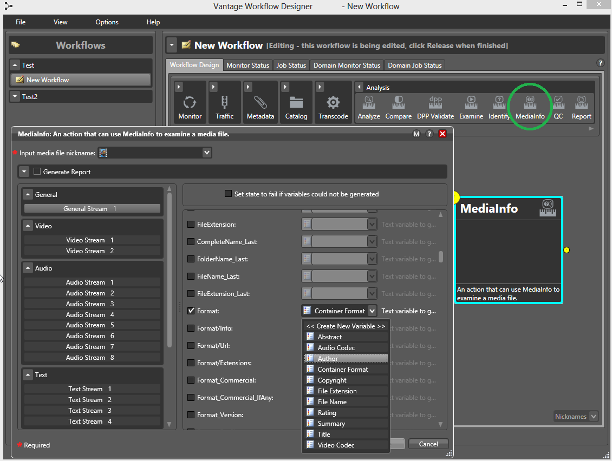

MediaInfo
metadata extractions tool
& software integration

Jérôme Martinez
MediaArea.net SARL
What is MediaInfo?
MediaInfo is a convenient unified display of the most relevant technical and tag data for video and audio files.
MediaInfo
is versatile.
Containers/wrappers
- SMPTE containers (MXF/DCP/IMF)
- GXF, LXF
- P2, XDCAM
- MPEG streaming containers (ts/m2ts/mpg/vob)
- MPEG file container (mp4)
- Quicktime (qt/mov)
- Matroska (mkv/mka/mks)
- RIFF (avi/wav/w64)
- Apple/SGI (aiff/aifc)
- Windows Media (asf/wma/wmv)
- ...
Video/image formats
- HEVC/H.265
- AVC/H.264
- MPEG-1/2 Video (mpgv/mpv/m1v/m2v)
- VC-1, VC-3/DNxHD
- DPX, EXR
- PNG, TIFF
- JPEG, JPEG 2000
- FFv1
- ...
Audio formats
- PCM
- Dolby E
- AC-3, E-AC-3
- DTS
- AAC/HE-AAC/HE-AACv2
- FLAC
- MPEG-1/2 Audio (mp1/mp2/mp3)
Captions/Subtitles
- CEA-606/708
- DVB subtitles
- ARIB captions
- N19/STL
- Teletext
- CDP
- WST
- TTML
- ...
Metadata
- Container-specific
- Ancillary data
- Time codes (MXF, GXF, QuickTime...)
- Bar data
- AFD
- AS-11/DPP
- Checksums presence
- ...
Examples of Metadata
- Writing library
- Channel assignment (left, right, rear...)
- Audio/caption language
- Law rating
- Broadcast service name
Input formats
- Files (local/network)
- FTP/FTPS/SFTP
- HTTP/HTTPS
- Direct memory access
Export formats
- Flat text
- XML
- EBUCore (1.5/1.6)
- PBCore (1.2/2.0)
- MPEG-7
- FIMS (Work in progress, 1.1/1.2)
MediaInfo
works everywhere.
Interfaces
- API (library)
- Command Line Interface
- Graphical User Interface
Bindings
- C, C++
- C#/Mono
- VB.net
- Python
- Java
- node.js (unofficial)
- ...
Platforms

- Windows
- Mac
- Linux: Ubuntu, Mint, RHEL/CentOS, Fedora,
SuSE, Solaris... - BSD: FreeBSD...
Architectures
- Intel/AMD 32-bit
- Intel/AMD 64-bit
- IA64
- PowerPC
- ARM
- ...
MediaInfo
is open source.
License
- BSD-2-Clause license
- Code source available for everyone
- Contacting developer not mandatory
- Not tied to a company
Business model
- Free: Software & developed features
- Not free: Closed source versions
- Not free: Bug correction
- Not free: New features
- Not free: Support/forensics
Examples of sponsored features (0)
- MPEG-7 export
- EBUCore
- AS-11 (UK DPP)
- IMF
- DTS Neural Audio
Examples of sponsored features (1)
MPEG-7 export
- Sponsored by Bibliothèque Nationale de France (National Library of France)
Examples of sponsored features (2)
EBUCore
- National Library of Wales sponsored EBUCore 1.5 output
- EBU sponsored EBUCore 1.6 update
- Features can be sponsored step by step
Examples of sponsored features (3)
AS-11 (UK DPP)
- Title, track layout, audio languages,
open/closed caption presence, segments, copyright, FPA... - Initial version sponsored by Digimetrics (now part of Tektronix)
- AS-11 to EBUCore mapping sponsored by EBU
Examples of sponsored features (4)
IMF
- SMPTE ST-2067 support
- Participation to IMF plugfests
- Sponsored by Digimetrics (now part of Tektronix)
- (Work in progress)
Examples of sponsored features (5)
DTS Neural Audio
- Presence detection (by metadata) of 5.1 transported in a 2.0 stream
- Sponsored by Numericable
Examples of sponsored features (6)
🐚 MediaConch
- Based on MediaInfo
- 3-year project
- Sponsored by European Union
- Includes implementation checker, policy checker, reporter, and fixer
- Initial focus: archival Matroska/FFV1/PCM
- Future focus: format sponsorship opportunities


Example of closed source (0)
- When open source does not fit the sponsor
- Closed source development is available
- Option to pay back for open source later
Example of closed source (1)
- Digimetrics (now part of Tektronix) Aurora
- Automated File-based QC Software
- More detailed container analysis
- latest developed feature: ARD/ZDF broadcast profiles
Example of closed source (2)
- Digimetrics (now part of Tektronix) Hydra
- File-based Player Software
- Demuxer feature addition
MediaInfo
can be automated.
Automation (0)
- Command line batch process
- DLL can be used for direct inclusion in your workflow
- MediaInfo can be adapted to any workflow
- Consultation available
Automation (1)
VRT example
Automation (2)
Telestream Vantage example
Automation (3)
File Information Tool Set (FITS)
- Developed by Harvard University Library Digital Repository Service
- Identifies and validates file formats, extracts metadata embedded within files, and outputs the metadata in various formats (including EBUCore)
- Manages the output from several other open source tools
- Will include MediaInfo as one of the inputs

What's next?
- Better IMF support
- MediaTrace
- Sony's camera metadata
- MediaConch
- Amazon S3 and Microsoft Azure input
- Your feature?
Stay in touch
MediaArea: https://mediaarea.net, @MediaArea_net
MediaInfo: https://mediaarea.net/MediaInfo
MediaConch: https://mediaarea.net/MediaConch
Jérôme Martinez: jerome@mediaarea.net
Slides: https://mediaarea.net/Events
License (except images): CC BY